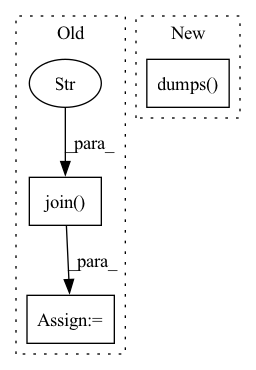

Pattern ID :30975

Before Change
base_dir = os.path.dirname(os.path.dirname(os.path.dirname(os.path.realpath(__file__))))
script = "run_monailabel_app.bat" if any(platform.win32_ver()) else "run_monailabel_app.sh"
if os.path.exists(os.path.realpath(os.path.join(base_dir, "scripts", script))):
script = os.path.realpath(os.path.join(base_dir, "scripts", script))
request = task["request"]
cmd = [
script,
settings.MONAI_LABEL_APP_DIR,
settings.MONAI_LABEL_STUDIES,
After Change
"-m",
method,
"-r",
json.dumps(request, separators=(",", ":")),
]
logger.info(f"COMMAND:: {" ".join(cmd)}")
In pattern: SUPERPATTERN
Frequency: 3
Non-data size: 3
Instances
Fragment ID: 91024286
Project Name: project-monai/monailabel
Commit Name: 62c4207eaf8efe94cd8123b6470f672206f8ece3
Time: 2021-10-17
Author: sachidanand.alle@gmail.com
File Name: monailabel/utils/async_tasks/utils.py
M Class Name: AnonimousClass
N Class Name: AnonimousClass
M Method Name: _task_func(3)
N Method Name: _task_func(3)
M Parent Class:
N Parent Class:
M File Name: monailabel/utils/async_tasks/utils.py
N File Name: monailabel/utils/async_tasks/utils.py
M Start Line: 36
M End Line: 48
N Start Line: 33
N End Line: 55
'>
Before Change
pm.Deterministic("w", x / z)
pm.Normal("y", observed=1)
file_path = tmpdir.join("model.p")
with open(file_path, "wb") as buff:
pickle.dump(model, buff)
After Change
pm.Deterministic("w", x / z)
pm.Normal("y", observed=1)
cloudpickle.loads(cloudpickle.dumps(model))
def test_model_vars():
'>
Fragment ID: 91024289
Project Name: pymc-devs/pymc3
Commit Name: f296a5cd824f30354d04421a05566c0c3f84a806
Time: 2021-07-13
Author: eelke.spaak@gmail.com
File Name: pymc3/tests/test_model.py
M Class Name: AnonimousClass
N Class Name: AnonimousClass
M Method Name: test_model_pickle_deterministic(1)
N Method Name: test_model_pickle_deterministic(1)
M Parent Class:
N Parent Class:
M File Name: pymc3/tests/test_model.py
N File Name: pymc3/tests/test_model.py
M Start Line: 417
M End Line: 427
N Start Line: 415
N End Line: 421
'>
Before Change
x = pm.Normal("x")
pm.Normal("y", observed=1)
file_path = tmpdir.join("model.p")
with open(file_path, "wb") as buff:
pickle.dump(model, buff)
After Change
x = pm.Normal("x")
pm.Normal("y", observed=1)
cloudpickle.loads(cloudpickle.dumps(model))
def test_model_pickle_deterministic(tmpdir):
'>
Fragment ID: 91024290
Project Name: pymc-devs/pymc3
Commit Name: f296a5cd824f30354d04421a05566c0c3f84a806
Time: 2021-07-13
Author: eelke.spaak@gmail.com
File Name: pymc3/tests/test_model.py
M Class Name: AnonimousClass
N Class Name: AnonimousClass
M Method Name: test_model_pickle(1)
N Method Name: test_model_pickle(1)
M Parent Class:
N Parent Class:
M File Name: pymc3/tests/test_model.py
N File Name: pymc3/tests/test_model.py
M Start Line: 406
M End Line: 414
N Start Line: 406
N End Line: 410